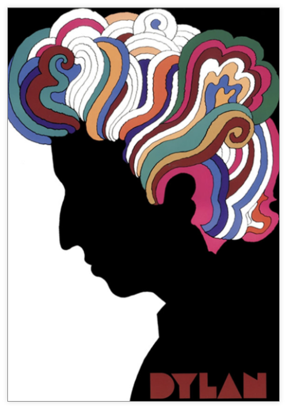
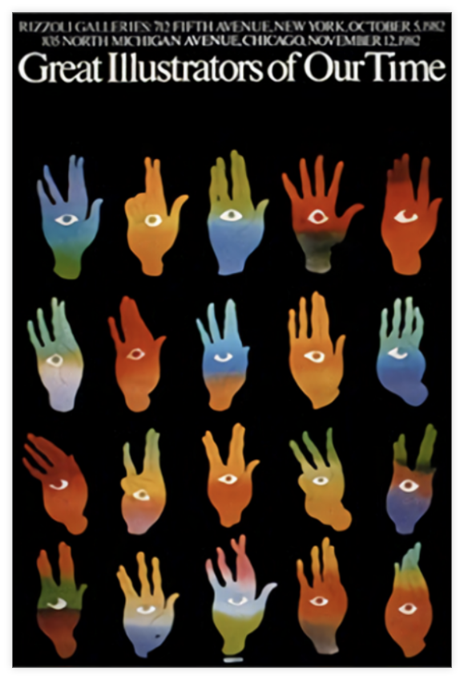
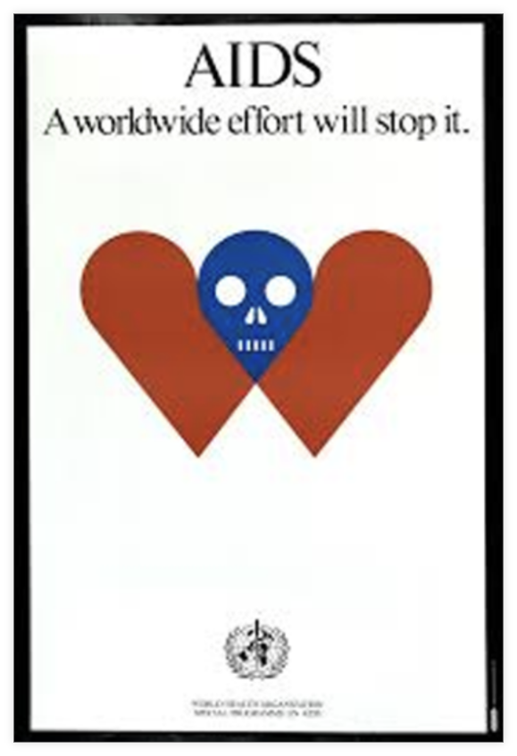
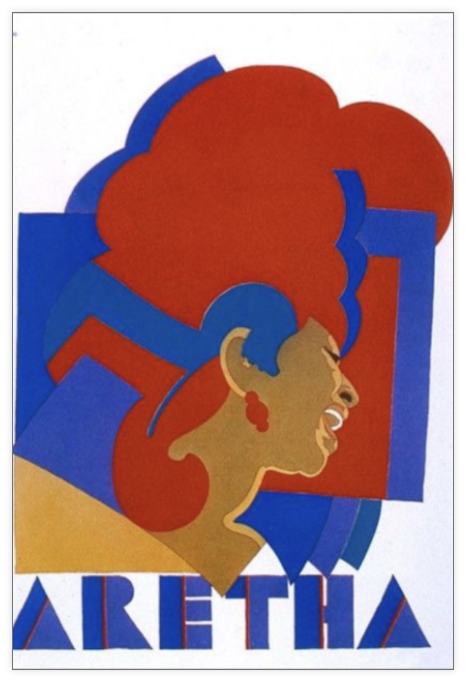

티셔츠나 머그컵 등 우리 주변에서도 쉽게 찾아 볼 수 있는, 역사상 가장 유명하고 인기있는 로고 ‘아이 러브 뉴욕
(I♥NY)’. 제1차 석유파동 직후 전 세계가 극심한 경제불황을 겪고 있던 1975년에 뉴욕주 상무국이 시민들에게 희
망을 주고자 기획한 광고 캠페인에서 탄생했다. 뉴욕 현대미술관(MoMA)의 디자인 분야 큐레이터인 파올라 안토
넬리(Paola Antonelli)에 따르면, 당시 뉴욕시는 10억 달러에 이르는 적자와 파산의 조짐, 해고된 30만 명의 실직
자와 범죄자의 증가, 환경미화원들의 파업 등으로 극심한 곤경에 처해 있었다고 한다. 이런 상황에서 미국을 대표
하는 세계적인 그래픽 디자이너이자 일러스트레이터인 밀턴 글레이저(Milton Glaser)가 이 광고 캠페인을 위한
그래픽 작업을 의뢰 받고 고심하다 우연히 냅킨에 스케치하여 만든 것이 바로 ‘아이 러브 뉴욕(I♥NY)’이다.
1966년 밥 딜런의 베스트 음반 포스터이며, 르네상스 회화부터 아르누보 스타일까지 역
사적인 요소들을 자유롭게 결합시키며 새로운 형태로 재 창조하여 개념적인 일러스트레
이션이나 과장된 형태 또는 의외의 유머로 자신만의 스타일인 “푸시핀 스타일”을 확립한
포스터이다.
다양한 모양의 손과 눈동자가 인상 깊은 포스터이다.
에이즈의 위험을 짧고 간결하게 경고를 담은 포스터이다.
아레사 프랭클린 (싱어송라이터) 그녀의 특징을 잘 살린 포스터이다.